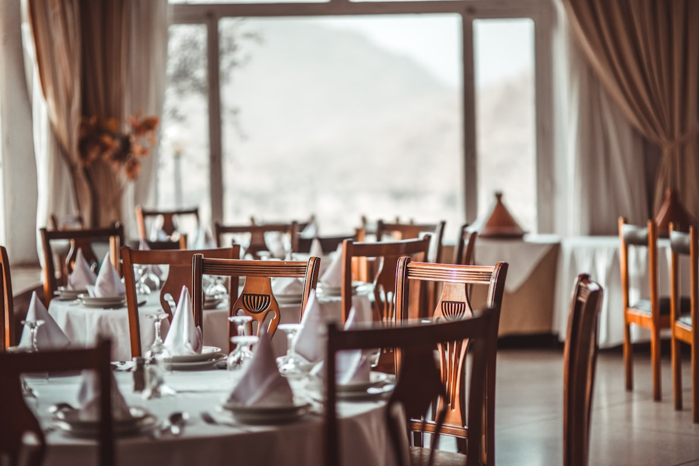
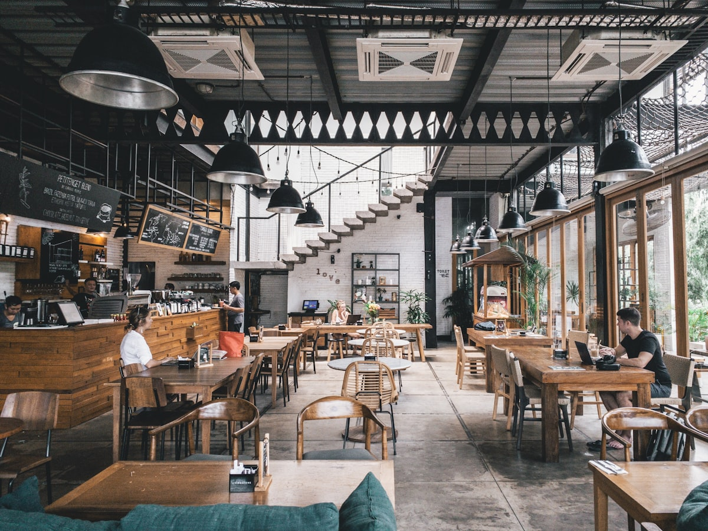

The Alchemy of Golden Shallots & Fine Reductions
At Shallot Aroma, we celebrate the cornerstone baseal cornerstone base of classic French gastronomy. Savor 48-hour allium glazes, heirloom grey shallot confits, and artisanal botanical pairings at 181 Mercer Street.

48-Hour Low-Thermal Confit
The Pillars of Allium Perfection
Where conventional kitchens treat alliums as background seasoning, we elevate French grey shallots to center stage through obsessive technical refinement.

Single-Estate Heirloom Bulbs
Harvested from certified biodynamic growers in Brittany and the Loire Valley, ensuring exceptional sugar content and natural sulfur balance.

Copper Kettle Reductions
Simmered in heavy French copper cookware for up to two days, gently caramelizing natural fructans without a trace of acrid burning.

Intimate Mercer Street Salon
Seating just twenty-four patrons per evening, our dining salon at 181 Mercer Street offers an intimate culinary journey into aromatics.

A Symphony of Sweetness, Acidity & Depth
From the delicate, crisp sweetness of shaved raw shallots in cold-pressed herb oils to the deeply resonant, velvety richness of demi-glace infused with roasted bulbs, each course demonstrates the limitless versatility of the allium family.
Every plate is paired with rare organic wines and house-made botanical infusions, curated to balance and accentuate every aromatic register.
Request Tasting Reservation